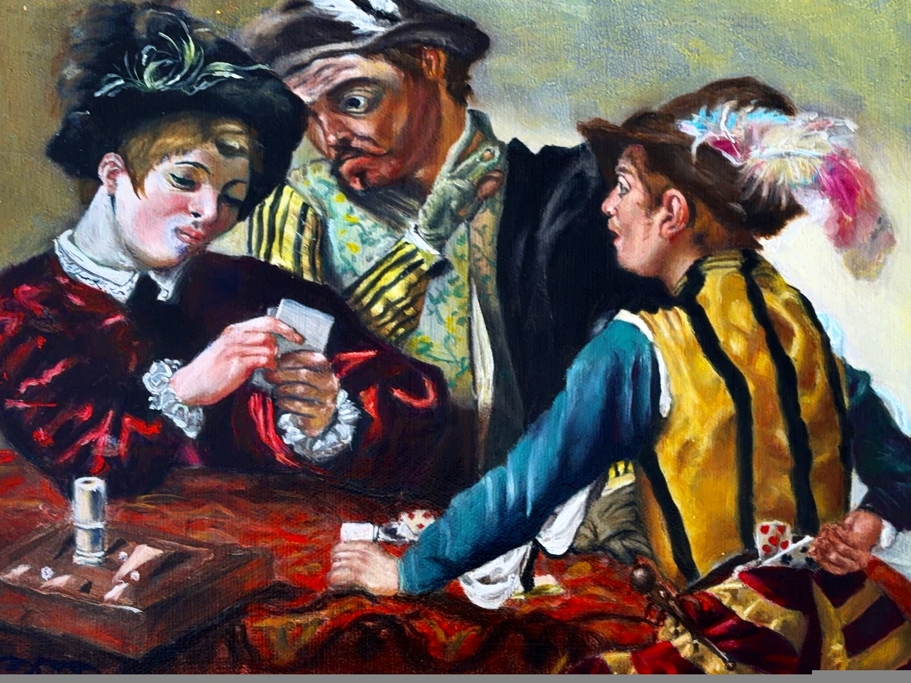
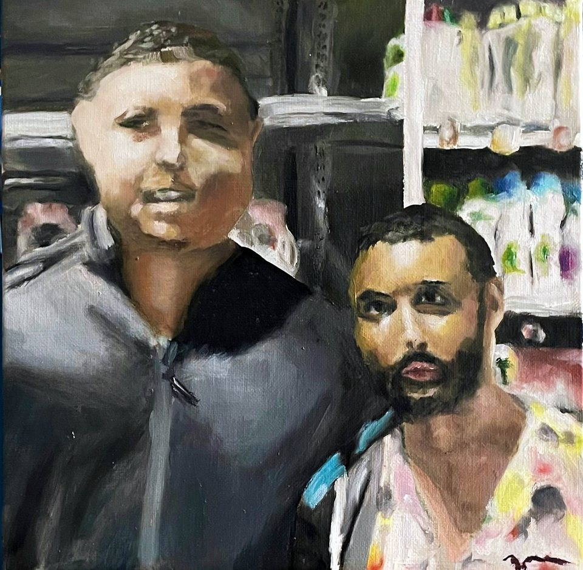
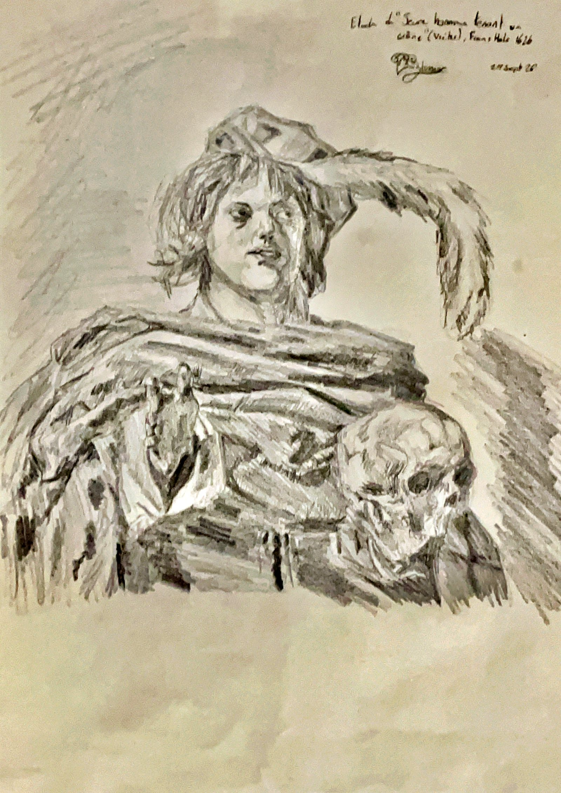
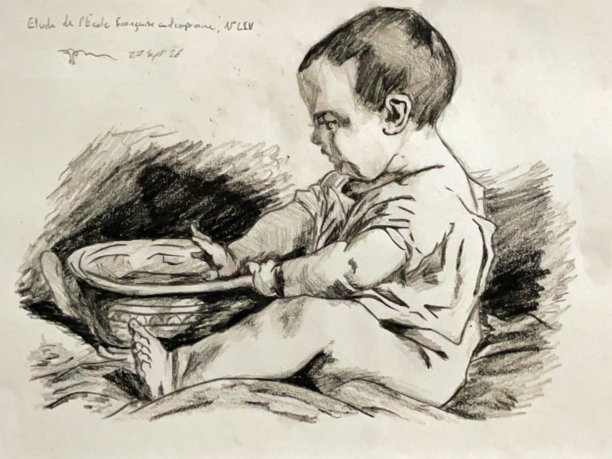
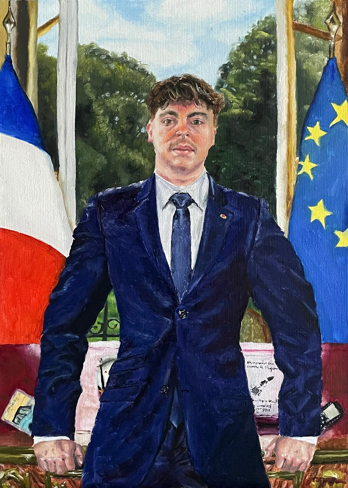

Portfolio
Manech
Dessins et peintures — 71 œuvres : 52 dessins (crayon, fusain, feutre) et 19 peintures (huile, acrylique).
Sélection récente

Etude du Caravage, Les tricheurs
10 novembre 2026 · Huile sur toile (lin, 24x33)

Arouf et R9
22 octobre 2026 · Huile sur toile (lin 30x30)
Les débuts
9 octobre 2026 · Huile sur toile (lin 24x19)

Etude de Frans Hals, Jeune homme tenant un crâne
29 septembre 2026 · Crayon de bois

Etude de l'Ecole Française contemporaine, N°LIV
27 septembre 2026 · Crayons de bois

Edouard président
21 septembre 2026 · Huile sur toile (lin 46x31)